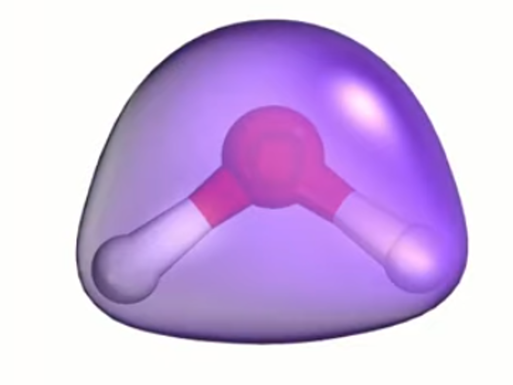
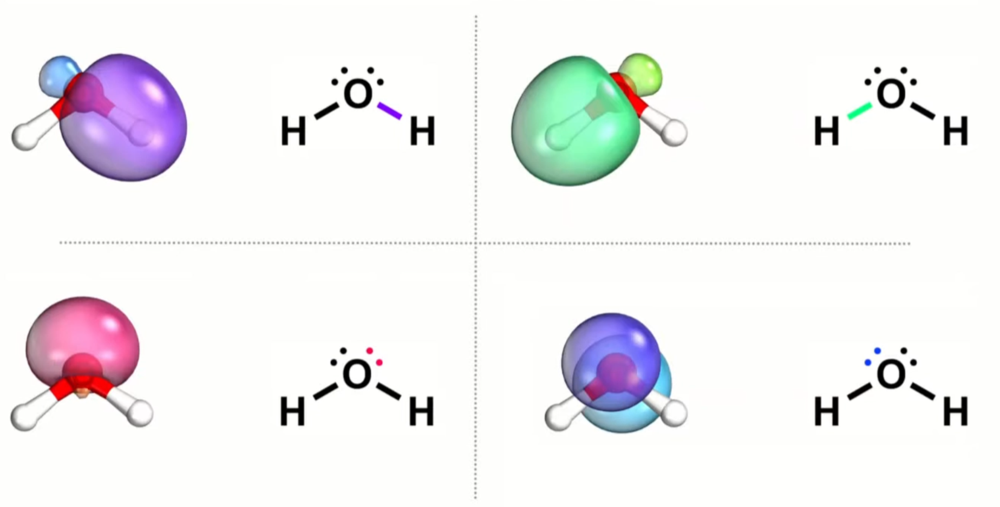
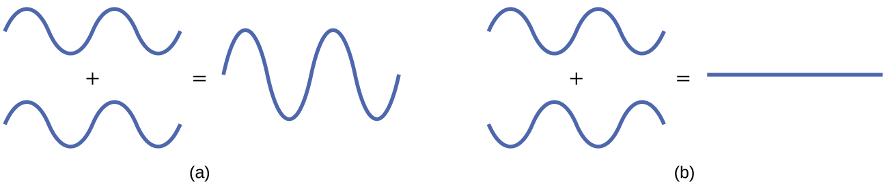
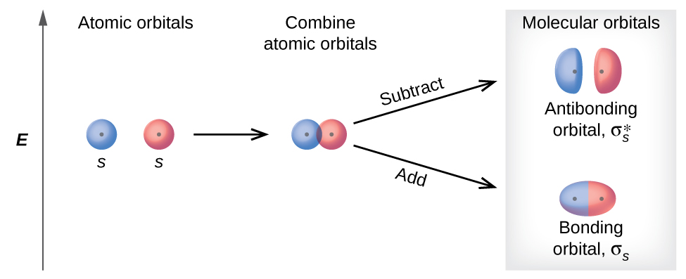
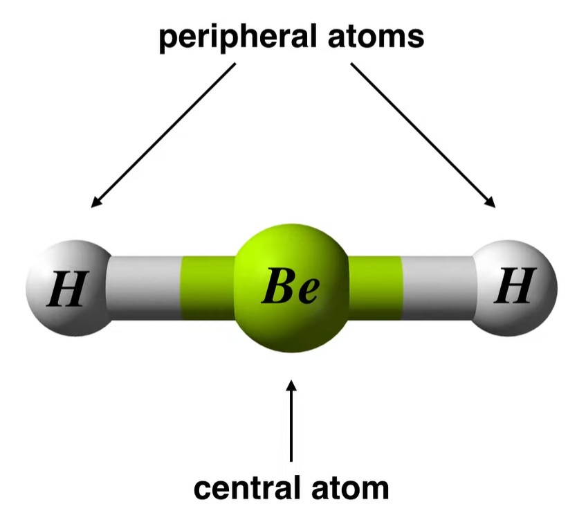
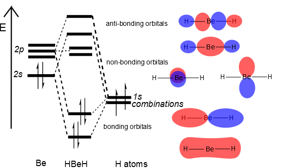
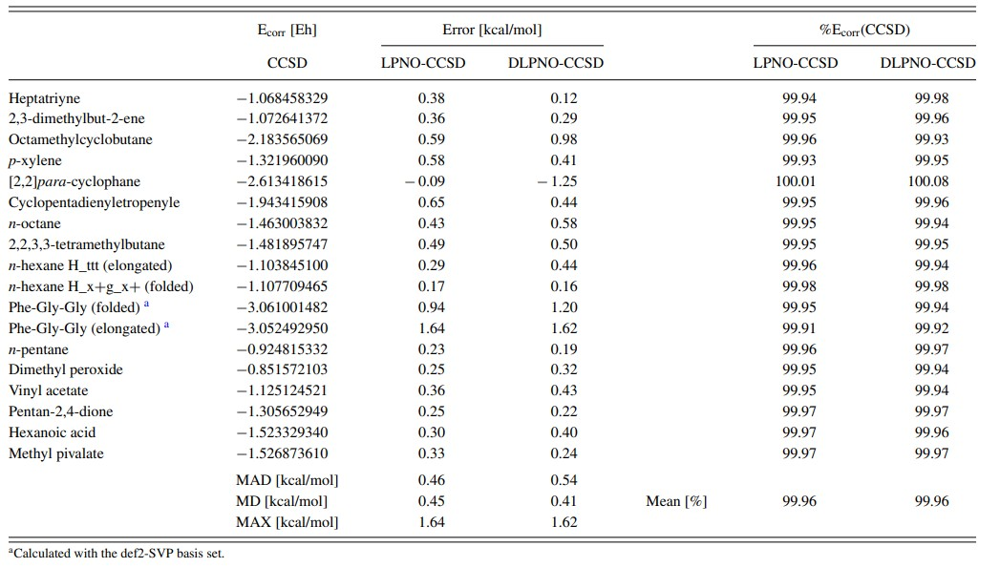
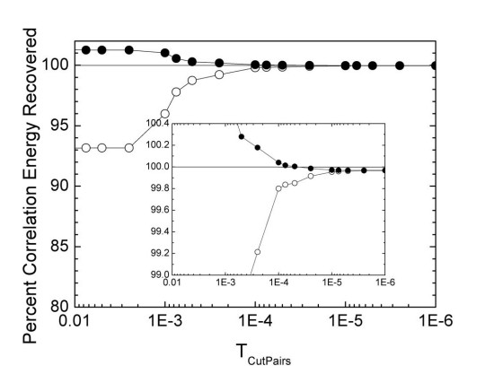
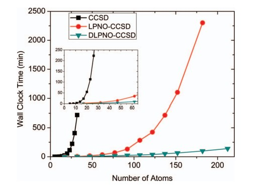
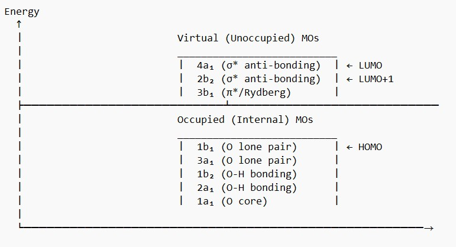

An Efficient and Near Linear Scaling Pair Natural Based Local Coupled Cluster Methods
Chanaka Mapa Mudiyanselage
Advisor: Prof. Fabian Maximilian Faulstich
Department of Mathematics, RPI
April 16, 2025
Presentation Outline
- Correlation
- CC theory and scaling
- Internal space and Virtual space
- Localization in internal space
- Unitary transformation
- Foster-Boys
- Localization in virtual space
- Challenges
- PNOs, LPNOs and DL-PNOs
- Christoph's and Frank's work
April 16, 2025
Department of Mathematics
Analogy about correlation
Imagine taking a photo of a crowded room where people avoid standing too close,
- HF photo: Shows people evenly spaced (average view), but some appear unnaturally close
- Correction (Correlation effect) photo: Add photos where some people step aside (excitations) to subtract the unrealistic crowding.
- Final (ground state or exact state) photo: The combination of these photos gives the true arrangement
Mathematically,
\[
E_{\text{exact}} = E_{\text{HF}} + E_{\text{Corr}}
\]
Note that, $E_{\text{HF}}$ is always negative. It is an overestimation.
April 16, 2025
Department of Mathematics
Why correlation is important?
- HF wave function
- Correlated wave function
In HF, we assume the wave function is well described by single slater determinant.
\[
| \Psi_{\text{HF}} \rangle = | \phi_1 \phi_2 \cdots \phi_N \rangle
\]
where $\phi_i$ are the occupied molecular orbitals. This is single configuration of electrons in orbitals.
In reality, the wave function is of the form,
\[
| \Psi_{\text{Corr}} \rangle = C_0 | \phi_1 \phi_2 \cdots \phi_N \rangle + C_1 | \phi'_1 \phi'_2 \cdots \phi'_N \rangle + \cdots
\]
where $\phi'_i$ is an alternative configuration. HF ignores these terms and cause errors. This is the reason why we need to take correlation into the account.
April 16, 2025
Department of Mathematics
Suitable candidate methods
- If other coefficients corresponding to correlations are "fast decaying" (Weakly correlated systems), HF is the best candidate
- If other coefficients corresponding to correlations are "not decaying but small" (strongly dynamically correlated systems)
- MP2
- MP4
- CISD-methods
- CC-methods
- If there's dominant contributions other than the the HF coefficient (strongly statically correlated systems, i.e HOMO -LUMO gap approaches zero)
- DMRG
- HF (anealing + otter tricks)
April 16, 2025
Department of Mathematics
Coupled Cluster Theory
Coupled Cluster Ansatz
\[
| \Psi_{\text{CC}} \rangle = e^T | \Psi_0 \rangle
\]
where the cluster operator \(T = T_1 + T_2 + \cdots\) and
\[
T_1 = \sum_{i = 1}^{N_{\text{occ}}} \sum_{a = 1}^{N_{\text{vir}}} t_i^a a_a^\dagger a_i \quad , \quad T_2 = \frac{1}{4} \sum_{i, j = 1}^{N_{\text{occ}}} \sum_{a, b = 1}^{N_{\text{vir}}} t_{ij}^{ab} a_a^\dagger a_b^\dagger a_j a_i
\]
where $i,j,k,...$ represents occupied orbitals and $a,b,c,...$ virtual orbitals.
CC Energy Equation
\[ E_{\text{CC}} = \langle \Psi_0 |e^{-T} H e^T | \Psi_0 \rangle \]
Residual/amplitude Equations
\[ R_{\mu} = \langle \Psi_{\mu} | e^{-T} H e^T | \Psi_0 \rangle = 0 \]
April 16, 2025
Department of Mathematics
CCSD energy equations
\[ E_{\text{CCSD}} = \langle \Psi_0 |e^{-T_{SD}} H e^{T_{SD}} | \Psi_0 \rangle \]
where the two body Hamiltonian given as
\[
H = \sum_{pq} h_{p}^{q} \, a_{p}^{\dagger} a_{q}
+ \frac{1}{4} \sum_{pqrs} \langle pq || rs \rangle \, a_{p}^{\dagger} a_{q}^{\dagger} a_{s} a_{r}
\]
Then we can have the expanded energy equation as as,
\[
\begin{aligned}
E_{\text{corr}} = \sum_{ia} h_i^a \, t_i^a
+ \frac{1}{4} \sum_{ijab} \langle ij || ab \rangle \, t_{ij}^{ab}
+ \frac{1}{2} \sum_{ijab} \langle ij || ab \rangle \, t_i^a \, t_j^b
\end{aligned}
\]
April 16, 2025
Department of Mathematics
CCSD singles amplitude equations
\[ R_i^a = \langle \Psi_i^a | e^{-T_{SD}} H e^{T_{SD}} | \Psi_0 \rangle = 0 \]
With the two body Hamiltonian above we can have the expanded singles amplitude equation as as,
\[
\begin{aligned}
0 = & \; h_a^i \nonumber \\
& + \sum_b h_a^b \, t_i^b - \sum_j h_j^i \, t_j^a \nonumber \\
& + \sum_{jb} \langle aj || ib \rangle \, t_j^b \nonumber \\
& + \sum_{jbc} \langle aj || bc \rangle \, t_{ij}^{bc} - \sum_{jkb} \langle jk || ib \rangle \, t_{jk}^{ab} \nonumber \\
& + \frac{1}{2} \sum_{jkbc} \langle jk || bc \rangle \, t_i^b \, t_{jk}^{ac} - \sum_{jkbc} \langle jk || bc \rangle \, t_j^a \, t_{ik}^{bc} \nonumber \\
& + \sum_{jbc} \langle aj || bc \rangle \, t_j^b \, t_i^c - \sum_{jkb} \langle jk || ib \rangle \, t_j^a \, t_k^b
\end{aligned}
\]
April 16, 2025
Department of Mathematics
CCSD doubles amplitude equations
\[ R_{ij}^{ab} = \langle \Psi_{ij}^{ab} | e^{-T_{SD}} H e^{T_{SD}}| \Psi_0 \rangle = 0 \]
With the two body Hamiltonian above we can have the expanded singles amplitude equation as as,
\[
\begin{aligned}
0 = & \; \langle ab || ij \rangle \nonumber \\
& + \sum_c \Big( h_a^c \, t_{ij}^{cb} - h_c^i \, t_{ij}^{ab} \Big)
+ \sum_c \Big( h_b^c \, t_{ij}^{ac} - h_c^j \, t_{ij}^{ab} \Big) \nonumber \\
& + \frac{1}{2} \sum_{kl} \langle kl || ij \rangle \, t_{kl}^{ab}
+ \frac{1}{2} \sum_{cd} \langle ab || cd \rangle \, t_{ij}^{cd} \nonumber \\
& + \mathcal{P}(ab) \sum_{kc} \langle ak || ic \rangle \, t_{jk}^{bc}
- \mathcal{P}(ij) \sum_{kc} \langle kb || ij \rangle \, t_{ik}^{ac} \nonumber \\
& + \mathcal{P}(ij)\mathcal{P}(ab) \sum_{kc} \langle ak || ic \rangle \, t_j^b \, t_k^c \nonumber \\
& + \frac{1}{2} \sum_{klcd} \langle kl || cd \rangle \, t_{ij}^{cd} \, t_{kl}^{ab} \nonumber \\
& + \mathcal{P}(ab) \sum_{klcd} \langle kl || cd \rangle \, t_{ik}^{ac} \, t_{jl}^{bd} \nonumber \\
& - \mathcal{P}(ij) \sum_{klcd} \langle kl || cd \rangle \, t_{ik}^{ab} \, t_{jl}^{cd}
\end{aligned}
\]
April 16, 2025
Department of Mathematics
Scaling
We understand that CC methods are very accurate. However, they are very expensive. Let's get some idea about scaling of CC methods
| Method | Scaling |
| CCSD | \(\mathcal{O}(N^6)\) |
| CCSD(T) | \(\mathcal{O}(N^7)\) |
| CCSDT | \(\mathcal{O}(N^8)\) |
Table 1: Scaling of CC methods
Where $N$ represents the number of basis functions. If we are using canonical CCSD $N$ represents the number of molecular orbitals.
Now let's understand this by picking a bad guy in the CCSD equations. We see particle particle ladder term is the most expensive one in CCSD equations
\[
\frac{1}{2} \sum_{cd} \langle ab || cd \rangle \, t_{ij}^{cd}
\]
This term scales $\mathcal{O}(N^6)$. Let's try to understand how this term scales $\mathcal{O}(N^6)$.
April 16, 2025
Department of Mathematics
Reducing the scale
Now we understand the CC-methods are very expensive and infeasible to solve for even averaged size molecule.
Therefore we must come up with a way to reduce the scaling.
We can reduce the scaling by using the following methods,
- Use limited number of excitations
- Reduce the number of basis functions
- In internal space
- In virtual space
- Use compressed integrals
- Embedding theories
***These approaches are pretty much under the local correlation techniques***
April 16, 2025
Department of Mathematics
Pictorial idea about localization
Localized and de-localized molecular orbitals of the water molecule,

Figure 1: De-localized molecular orbital[2]

Figure 2: Localized molecular orbital[2]
Internal and virtual spaces
- Internal space (Occupied Space)
- Set of occupied molecular orbitals (MOs) that are filled with electrons in the HF ground state of the system.
- These orbitals are obtained from a mean-field method (like HF or DFT) and represent the "filled" states where electrons reside in the ground state.
- Virtual space (Unoccupied Space)
- Set of unoccupied MOs that are not filled with electrons in the HF ground state.
- These orbitals are typically higher in energy than the occupied orbitals and can be accessed through excitations.
April 16, 2025
Department of Mathematics
AOs and MOs

Figure 3: Interfirence of waves functions (Atomic orbitals)[3]

Figure 4: Boding and anit-bonding MOs[3]
LCAO mathematically,
\[
\Psi_i = \sum_{\mu=1}^{N} C_{\mu i} \Phi_\mu
\]
The molecular orbitals $\Psi_i$ are formed by combining atomic orbitals $\Phi_\mu$
where $C_{\mu i}$ are the molecular orbital coefficients.
Example - Beryllium Hydride
Consider,

Figure 5: BeH2 Molecule[3]

Diagram 1: Molecular orbitals diagram for BeH2[3]
Localization in internal space
Canonical molecular orbitals (MOs) are eigenfunctions of the Fock space and are typically delocalized over the entire molecule.
Localized orbitals, however, describe chemically intuitive features like,
- Core electrons (localized near nuclei).
- Lone pairs (localized on specific atoms).
- Bonds (localized between pairs of atoms).
Mathematical Framework is,
First, given a set of occupied canonical molecular orbitals (MOs) \(\{ \Psi_i \}_{i=1}^{N_{\text{occ}}}\),
we seek a unitary transformation \(U\) that produces localized orbitals \(\{ \psi_i \}_{i=1}^{N_{\text{occ}}}\):
\[
\psi_i = \sum_{j=1}^N U_{ji} \Psi_j
\]
April 16, 2025
Department of Mathematics
Unitary transformation
The key idea is that a unitary transformation rotates the delocalized canonical orbitals into a new set of orbitals
that are spatially localized, while preserving their orthonormality and total electron density. Here’s the intuition,
Norm preservation: \(\langle \psi_i | \psi_i \rangle = 1\) (orbitals stay normalized).
Orthogonality preservation: \(\langle \psi_i | \psi_j \rangle = 0\) (orbitals remain orthogonal).
Total electron density unchanged: \(\sum_i |\psi_i|^2 = \sum_i |\Psi_i|^2\).
The unitary transformation optimizes a localization criterion, effectively "focusing" each orbital into a
smaller spatial region. Here’re some methods,
- Foster-Boys (FB) localization.
- Pipek-Mezey (PM) localization.
April 16, 2025
Department of Mathematics
FB localization
Different localization methods optimize different criteria. Here we will discuss particulary about FB,
Key idea is we minimize the sum of orbital variances and this leads to localized spatial spread.
\[
\Omega = \sum_{i=1}^N \left( \langle \psi_i | r^2 | \psi_i \rangle - \langle \psi_i | \mathbf{r} | \psi_i \rangle^2 \right)
\]
The spread ($\Omega_i$) of an orbital $\psi_i$ measures how much its electron density is "smeared out" in space.
Mathematically, it's the variance of the position operator $\mathbf{r}$ for the orbital.
\[
\Omega_i = \langle \psi_i | r^2 | \psi_i \rangle - \langle \psi_i | \mathbf{r} | \psi_i \rangle^2
\]
Smaller $\Omega_i$ means the orbital is more localized (electron density concentrated near its center).
Foster-Boys aims to minimize the sum of spreads for all occupied orbitals,
\[
\Omega = \sum_{i=1}^N \Omega_i
\]
This forces each orbital to, shrinks toward a point (like squeezing a balloon to reduce its volume) and
avoid overlapping tails (delocalized "fringes" of orbitals are suppressed).
April 16, 2025
Department of Mathematics
FB intuiation
- Chemical Interpretation
- Core electrons: Naturally localized near nuclei (tiny spread).
- Bonds: Concentrated between two atoms (small spread along the bond axis).
- Lone pairs: Localized on one atom (compact, like a "lump" of density).
- Analogy to Classical Physics
- Delocalized orbital: A diffuse cloud (high variance).
- Localized orbital: A tight, dense cloud (low variance).
By minimizing $\Omega$, FB transforms delocalized MOs into these chemically intuitive objects.
Imagine each orbital as a probability cloud (like a blob of charge),
FB is like pulling the cloud’s edges inward to make it as compact as possible..
April 16, 2025
Department of Mathematics
Localization procedure via (FB) localization
Goal,
Minimize the functional $\left(\Omega = \sum_{i=1}^N \left( \langle \psi_i | r^2 | \psi_i \rangle - \langle \psi_i | \mathbf{r} | \psi_i \rangle^2 \right)\right)$
This corresponds to minimizing the spread (variance) of each orbitals's position and key steps in minimization are,
- Start with the occupied MOs (typically start with canonical HF orbitals).
- Construct the Boys functional, for each pair of localized orbitals, evaluate the orbital centers.
- The algorithm performs pairwise Jacobi rotations among the orbitals.
- Choose a pair (i, j)
- Optimize a unitary rotation matrix to reduce the spread
- Rotate the orbitals
- Repeat until convergence (Convergence Criteria: Stop when the change in the Boys functional is below a threshold (e.g., 10^{-8}))
\[\mathbf{r}_i = \langle \psi_i | \mathbf{r} | \psi_i \rangle\]
Here, rotation matrix is $U(\theta)$
$\psi_i{\prime}, \psi_j{\prime} = U(\theta) (\psi_i, \psi_j)$
April 16, 2025
Department of Mathematics
PNOs in depth - Part 1
Start with constructing the "Pair-Specific Density Matrix" (Assumption we already have MP2 cluster amplitudes for the virtual space),
For each occupied electron pair $(ij)$, we define the "pair density matrix" in the virtual orbital space.
\[
PD(\text{for pair}-ij) = \sum_{a,b =1}^{N_{\text{vir}}} t_{ij}^{ab} t_{ij}^{ba^*} \in \mathbb{C}^{N_{\text{vir}} \times N_{\text{vir}}}
\]
where, MP2 amplitudes are,
\( t_{ij}^{ab} = \dfrac{\langle ij \vert \vert ab \rangle}{\epsilon_i + \epsilon_j - \epsilon_a - \epsilon_b}\) for $a,b \in N_{\text{vir}}$
Next we diagonalize the "Pair Density Matrix",
We diagonalize $PD$ to obtain its eigenvalues (occupations) and eigenvectors (transformation matrix).
\[
PD = \sum_{k=1}^{N_{\text{vir}}} n_k V_k V^*_k
\]
$n_k$ - occupation numbers (sorted in descending order)
$U = V V^*$ - unitary transformation matrix
April 16, 2025
Department of Mathematics
PNOs in depth - Part 2
Continue,
Then we transform the canonical virtual MOs to PNOs using contructed unitary matrix (reduced),
\[
\chi^{ab}_k(ij) = U \Psi^{ab}_{ij} \quad\forall k \in N_{\text{vir}}
\]
We understand that the eigen-values $n_k$ represents the contribution significace of the virtual orbitals to the choosen electron pair.
Thus we take the advantage here by introducing a threshold (called $T_{\text{CutPair}}$) to select the most significant virtual orbitals contributions.
This reduces the number of PNOs which we are gojng to contruct significantly without loosing accuracy.
i.e, we retain only PNOs with significant occupations
Keep $\chi^{ab}_k(ij)$ if $n_k > \tau \quad (\tau \approx 10^{-6})$.
Roughly speaking the compression is about "98%" as the orbital remainder = $\frac{\text{No. of PNOs kept}}{\text{No. of canonical virtuals}} \approx \frac{20}{1000} = 2\%$
April 16, 2025
Department of Mathematics
Christoph's and Frank's work - results - Part 1
Error analysis of DLPNO-CCSD for the absolute energies of a series of medium sized reference molecules with the def2-TZVP basis set. All
molecules have an average pair domain size less than 90% of the whole system size,

Table 2: Error analysis of DLPNO-CCSD[6]
Christoph's and Frank's work - results - Part 2
The calculations were carried out on linear hydrocarbon chains H3C–(CH2)n−2–CH3 (in standardized geometries with all angles with 109.4712◦, RCH = 109 pm and RCC = 155 pm) and default thresholds.
The insets show magnifications of the calculated curve. Default thresholds
were used ($T_{\text{CutPairs}}$ = 10−4 Eh),

Figure 6: The convergence of the DL-PNO-CCSD[6]

Figure 7: Scaling of DL-PNO-CCSD[6]
Summary
- Correlation
- CC theory
- Internal space and Virtual space
- Localization in internal space
- Localization in the internal space.
- Localization in the virtual space.
- Results of Christoph's and Frank's work
April 16, 2025
Department of Mathematics
That's for today
Any Questions?
Internal and external spaces of water molecule
Take the water molecule,
It has 10 electrons (8 from O, 1 from each H).
In HF, the 5 lowest-energy MOs are occupied (hold 2 electrons each in a closed-shell system).
Occupied Orbitals (Internal Space),
Core Orbital (1a$_1$) – Deeply bound O(1s) orbital.
Bonding $\sigma$ (2a$_1$) – O-H bonding + O lone pair.
Bonding $\sigma$ (1b$_2$) – O-H bonding.
Lone Pair (3a$_1$) – Mostly O lone pair.
Lone Pair (1b$_1$) – Pure O(p) lone pair (perpendicular to the plane).
Virtual (Unoccupied) Space,
Anti-Bonding $\sigma^*$ (4a$_1$) – O-H anti-bonding (LUMO).
Anti-Bonding $\sigma^*$ (2b$_2$)} – O-H anti-bonding (LUMO+1).
Rydberg-type Orbitals} – Diffuse, higher-energy orbitals.
April 16, 2025
Department of Mathematics
Pictoral idea about internal and virtual spaces
The above idea as a diagram,

Figure 5: Water molecule internal and virtual spaces
April 16, 2025
Department of Mathematics